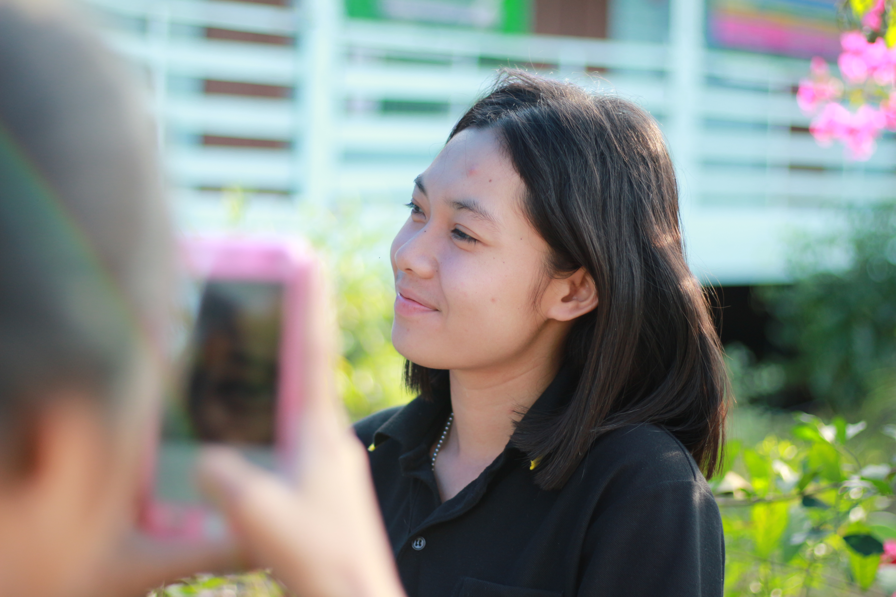
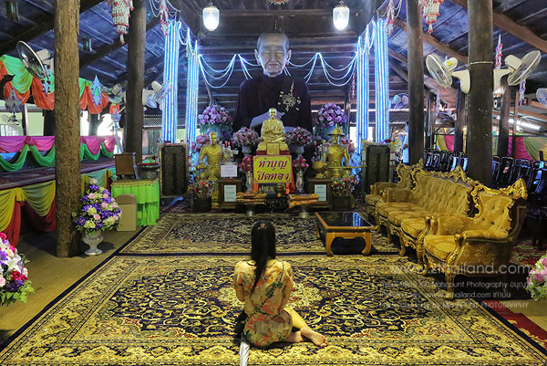
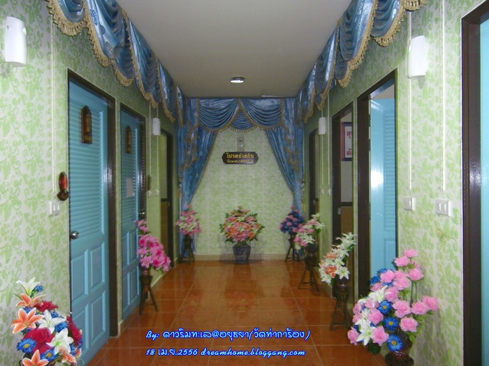

ตลาดน้ำกรุงเก่า วัดท่าการ้อง จังหวัดพระนครศรีอยุธยา

เนื้อหา
เรียกได้ว่ามาถึงวัดแล้วประทับใจสมกับคำร่ำลือ “สวนสวย ส้วมสะอาด ใช้ธรรมชาติผสานธรรมะ”
ที่พุทธศาสนิกชนทั้งไทยและต่างชาติจากทั่วสารทิศยกย่องให้ ด้วยว่าที่นี่แตกต่างจากวัดทั่วไป โดยเนรมิตปรับภูมิทัศน์ด้วยไม้ดอกหลากสีสัน
ไม้ประดับนานาพรรณ ตุ๊กตาดินเผาหลายรูปแบบ และส้วมสะอาด ติดแอร์ ปูพรม ประดับประดาด้วยม่านระย้า แถมยังมีส้วมสำหรับบรรดา
ชายไม่จริง หญิงไม่แท้ไว้ปลดทุกข์อีกต่างหาก ในแต่ละวันจะมีผู้คนหลั่งไหลมากราบไหว้พระ ขอพรหลวงพ่อยิ้ม พระประธานสมัยอยุธยาที่เก่าแก่และศักดิ์สิทธิ์มาก

- วัดท่าการ้อง
เนื้อหา
- เนื่องจากวัดท่าการ้อง เป็นวัดเก่าแก่ริมสายน้ำเจ้าพระยา สร้างขึ้นสมัยอยุธยาก่อนปี พ.ศ. 2092 นับถึงปัจจุบัน
- ก็มีอายุกว่า 474 ปีแล้ว ในปี 2309 วัดท่าการ้องได้เคยเป็นที่ตั้งค่ายของพม่าค่ายหนึ่งก่อนเสียกรุงศรีอยุธยา
- จนมีคำกล่าวว่า “.. นกกาจากวัดการ้อง บินไปเสียบอก ณ ยอดพระปรางค์วัดพระศรีมหาธาตุ
- ใจกลางกรุงศรีอยุธยา น้ำตาหลวงพ่อโต วัดพนัญเชิง ไหลนองพระเนตร อันเป็นลางบอกเหตุสิ้นแล้ว แผ่นดินกรุงศรีอยุธยา “
- และในสมัยเกิดสงครามโลกครั้งที่ 2 วัดท่าการ้องได้ถูกจัดให้เป็นโรงเรียนนายร้อยฝ่ายช่างเทคนิค รุ่น 10-12 เป็นการชั่วคราว
- โดยใช้ศาลาการเปรียญเป็นห้องเรียน และเป็นที่พักอาศัย ก่อนที่จะถูกปล่อยทิ้งขาดการเอาใจใส่ดูแลเป็นเวลานานจนทำให้ทรุดโทรมลงในที่สุด
- ซึ่งขณะนี้กำลังทำการบูรณะปฏิสังขรณ์โบราณสถานและโบราณวัตถุภายในวัด เพื่อให้เป็นที่ศึกษาประวัติศาสตร์และวัฒนธรรมสมัยกรุงศรีอยุธยา
| สถานที่น่าสนใจภายในวัด |
เนื้อหา |
| 
| หลวงพ่อโตองค์ใหญ่ ที่สักสาระบูชา |
| 
| ห้องน้ำติดแอร์ ภายในวัด |
การเดินทาง
- รถยนต์ส่วนตัว : เส้นทางที่ 1 จากดอนเมือง, รังสิต
- รถไฟ : นั่งรถไฟนั่งจากหัวลำโพง, บางซื่อ, ฯลฯ มาลงสถานีรถไฟอยุธยา
- รถประจำทาง : นั่งรถจากหมอชิตหรือฟิวเจอร์ปาร์ครังสิต มาลงอยุธยา
- รถตู้ : นั่งรถตู้จากทั้งอนุสาวรีย์ชัยฯ, ปิ่นเกล้า, หมอชิตและฟิวเจอร์ปาร์ครังสิต มาลงอยุธยา
สถานที่ตั้ง
ข้อมูลเพิ่มเติม
Back to top